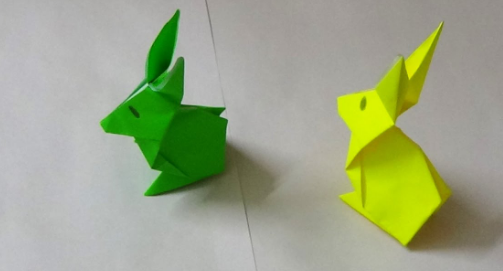
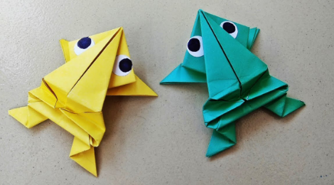
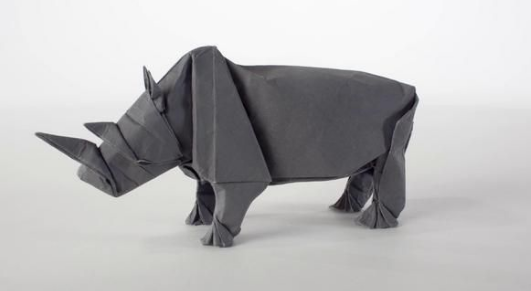
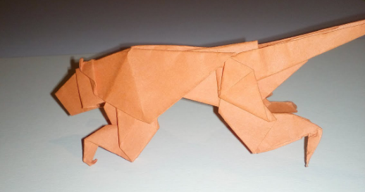

These are some facts about animals and some origami videos
Click on images to learn how to make them !!

1. A baby rabbit is called a kit, a female is called
a doe and a male is called a buck.
2. Rabbits are very social creatures that live in groups.
3. A rabbit's teeth never stop growing!
4. Rabbits perform an athletic leap, known as a 'binky'
when they're happy!
1. Lions are the only cats that live in groups.
2. A group, or pride, can be up to 30 lions
depending on how much food and water is available.
3. Female lions are the main hunters.
4. A lion's roar can be heard up to eight kilometres away.
5. Lions scent mark their territory, using their
wee, to create a border.

1. Frogs absorb water through their skin so they
don't need to drink.
2. Frogs can lay as many as 4,000 eggs in frogspawn.
3. The eyes and nose of a frog are on top of its
head so it can breathe and see when most of its body
is under the water.
4. Frogs have long back legs and webbed feet for
jumping and swimming.

1. The name rhinoceros means 'nose horn' and
is often shortened to rhino.
2. There are five different species of rhinoceros
three native to southern Asia and two native to Africa.
3. All five species of rhinoceros can grow to weigh over
1000 kg (2200 lb).
4. White rhino can weigh over 3500 kg (7700 lb).
1. Horses can sleep both lying down and standing
up.
2. Horses can run shortly after birth.
3. Domestic horses have a lifespan of around 25
years
4. A 19th century horse named 'Old Billy' is
said top have lived 62 years.
5. Horses have around 205 bones in their skeleton.
6. Horses have been domesticated for over 5000
years.

1. The tiger is the biggest species of the cat
family.
2. Tigers can reach a length of up to 3.3 metres
(11 feet) and weigh as much as 300 kilograms (660 pounds).
3. Subspecies of the tiger include the Sumatran Tiger,
Siberian Tiger, Bengal Tiger, South China Tiger, Malayan
Tiger and Indochinese